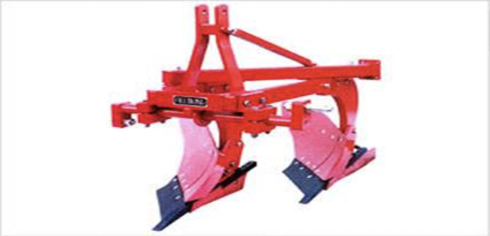

5.0 ਬਿਜਾਈ ਅਤੇ ਖਾਦ ਦੀ ਵਰਤੋਂ ਕਰਨ ਵਾਲੇ ਉਪਕਰਨ
- 5.1 ਖਾਦ ਪ੍ਰਸਾਰਕ
- 5.2 ਬੀਜ-ਕਮ-ਖਾਦ ਡਰਿੱਲ
- 5.3 ਜ਼ੀਰੋ-ਟਿਲ ਡਰਿੱਲ
- 5.4 ਸਟ੍ਰਿਪ-ਟਿਲ ਡਰਿੱਲ
5.1 ਖਾਦ ਪ੍ਰਸਾਰਕ
ਵਿਸ਼ੇਸ਼ਤਾਵਾਂ
ਇਸ ਉਪਕਰਨ ਦੀ ਵਰਤੋਂ ਦਾਣੇਦਾਰ ਖਾਦ ਅਤੇ ਫ਼ਸਲ ਦੇ ਛੋਟੇ ਬੀਜਾਂ ਦੇ ਪ੍ਰਸਾਰਣ ਲਈ ਵੀ ਕੀਤੀ ਜਾਂਦੀ ਹੈ। ਇਹ ਉਪਕਰਨ ਹੱਥਾਂ ਨਾਲ ਚੱਲਣ ਵਾਲੇ ਅਤੇ ਟਰੈਕਟਰ ਦੁਆਰਾ ਸੰਚਾਲਿਤ ਸੰਸਕਰਣ ਵਿੱਚ ਉਪਲਬਧ ਹੈ। ਹੱਥਾਂ ਨਾਲ ਚੱਲਣ ਵਾਲੇ ਪ੍ਰਸਾਰਕ ਨੂੰ ਇਸਦੇ ਨਾਲ ਪ੍ਰਦਾਨ ਕੀਤੇ ਗਏ ਮੋਢੇ ਦੀਆਂ ਪੱਟੀਆਂ ਦੀ ਮਦਦ ਨਾਲ ਆਪਰੇਟਰ ਦੇ ਸਾਹਮਣੇ ਰੱਖਿਆ ਜਾਂਦਾ ਹੈ ਅਤੇ ਹੈਂਡਲ ਦੀ ਮਦਦ ਨਾਲ ਚਲਾਇਆ ਜਾ ਸਕਦਾ ਹੈ। ਟਰੈਕਟਰ ਸੰਚਾਲਿਤ ਸੰਸਕਰਣ ਪਿੱਛੇ ਮਾਊਂਟ ਕੀਤਾ ਗਿਆ ਹੈ ਅਤੇ ਇਸਦੇ PTO ਦੁਆਰਾ ਚਲਾਇਆ ਜਾਂਦਾ ਹੈ। ਪ੍ਰਸਾਰਕ, ਦੋਵੇਂ ਸੰਸਕਰਣਾਂ ਵਿੱਚ ਮੁੱਖ ਤੌਰ 'ਤੇ ਇੱਕ ਹੌਪਰ ਅਤੇ ਇੱਕ ਸਪਿਨਿੰਗ ਡਿਸਕ ਹੁੰਦੀ ਹੈ। ਹੌਪਰ ਤੋਂ ਬੀਜ ਜਾਂ ਖਾਦ ਨੂੰ ਤੇਜ਼ ਰਫ਼ਤਾਰ ਨਾਲ ਘੁੰਮਦੀ ਹੋਈ ਸਪਿਨਿੰਗ ਡਿਸਕ 'ਤੇ ਡਿੱਗਣ ਲਈ ਬਣਾਇਆ ਜਾਂਦਾ ਹੈ, ਜੋ ਬਦਲੇ ਵਿੱਚ ਬੀਜ/ਖਾਦ ਨੂੰ ਕੇਂਦਰਿਤ ਸ਼ਕਤੀ ਦੇ ਕਾਰਨ ਚਾਰੇ ਪਾਸੇ ਇੱਕਸਾਰ ਰੂਪ ਵਿੱਚ ਫੈਲਾਉਂਦਾ ਹੈ। ਸਪਿਨਿੰਗ ਡਿਸਕ ਵਿੱਚ ਸਮੱਗਰੀ ਦੇ ਪ੍ਰਵਾਹ ਨੂੰ ਇੱਕ ਸ਼ਟਰ ਪਲੇਟ ਦੁਆਰਾ ਨਿਯੰਤਰਿਤ ਕੀਤਾ ਜਾ ਸਕਦਾ ਹੈ।
ਨਿਰਧਾਰਨ:
ਟਰੈਕਟਰ ਚਲਾਇਆ ਗਿਆ
| ਪਾਵਰ ਸਰੋਤ ਟਰੈਕਟਰ | : 5hp/26.5 kW |
| ਹੌਪਰ ਸਮਰੱਥਾ | : 300 Kg |
| ਮਸ਼ੀਨ ਦਾ ਭਾਰ | : 180 cm |
| ਖੇਤਰ ਨੂੰ ਕਵਰ ਕੀਤਾ | : 2.50 ha/h |
ਖੇਤਰ ਨੂੰ ਕਵਰ ਕੀਤਾ
| ਇਕ ਵਿਅਕਤੀ | |
| ਹੌਪਰ ਸਮਰੱਥਾ | : 10 kg |
| ਭਾਰ | : 4 Kg |
| ਸਮੁੱਚਾ ਮਾਪ (ਲੰਬਾਈ, ਚੌੜਾਈ ਅਤੇ
ਉਚਾਈ) = 41 cm, 38.5 cm and 41 cm. |
|
| ਖੇਤਰ ਨੂੰ ਕਵਰ ਕੀਤਾ | : 1.0 ha/h |
ਵਰਤਦਾ ਹੈ:
ਇਸ ਦੀ ਵਰਤੋਂ ਦਾਣੇਦਾਰ ਖਾਦ ਅਤੇ ਬੀਜਾਂ ਨੂੰ ਲੋੜੀਂਦੀ ਦਰ ਅਨੁਸਾਰ ਖੇਤ ਵਿੱਚ ਬਰਾਬਰ ਰੂਪ ਵਿੱਚ ਪ੍ਰਸਾਰਿਤ ਕਰਨ ਲਈ ਵਰਤਿਆ ਜਾਂਦਾ ਹੈ।
ਮਸ਼ੀਨ ਦੀ ਲਾਗਤ : Rs 12000 (ਟਰੈਕਟਰ ਚਲਾਇਆ ਗਿਆ) and Rs.2500/-(ਮੈਨੁਅਲ)
5.2 ਬੀਜ-ਕਮ-ਖਾਦ ਡਰਿੱਲ

ਵਿਸ਼ੇਸ਼ਤਾਵਾਂ
ਬੀਜ ਕਮ ਖਾਦ ਡਰਿੱਲ ਵਿੱਚ ਇੱਕ ਬੀਜ ਬਾਕਸ, ਖਾਦ ਬਾਕਸ, ਬੀਜ ਅਤੇ ਖਾਦ ਮੀਟਰਿੰਗ ਵਿਧੀ, ਬੀਜ ਟਿਊਬਾਂ, ਫਰੋਰੋ ਓਪਨਰ, ਬੀਜ ਅਤੇ ਖਾਦ ਦੀ ਦਰ ਨੂੰ ਐਡਜਸਟ ਕਰਨ ਵਾਲਾ ਲੀਵਰ ਅਤੇ ਟ੍ਰਾਂਸਪੋਰਟ ਕਮ ਪਾਵਰ ਟ੍ਰਾਂਸਮਿਟਿੰਗ ਵ੍ਹੀਲ ਸ਼ਾਮਲ ਹੁੰਦੇ ਹਨ। ਬੰਸਰੀ ਵਾਲੇ ਰੋਲਰ ਇੱਕ ਸ਼ਾਫਟ ਦੁਆਰਾ ਚਲਾਏ ਜਾਂਦੇ ਹਨ ਜੋ ਪਹੀਆਂ ਤੋਂ ਸ਼ਕਤੀ ਪ੍ਰਾਪਤ ਕਰਦੇ ਹਨ। ਫਲੂਟੇਡ ਰੋਲਰ ਬੀਜ ਦੇ ਡੱਬੇ ਵਿੱਚ ਫਿਕਸ ਕੀਤੇ ਗਏ ਹਨ, ਬੀਜਾਂ ਨੂੰ ਲੰਬਕਾਰੀ ਖੰਭਿਆਂ ਵਿੱਚ ਪ੍ਰਾਪਤ ਕਰੋ ਅਤੇ ਉਹਨਾਂ ਨੂੰ ਫਰੋ ਓਪਨਰਾਂ ਨਾਲ ਜੁੜੀ ਬੀਜ ਟਿਊਬ ਵਿੱਚ ਸੁੱਟੋ। ਰੋਲਰਸ ਨੂੰ ਪਾਸੇ ਵੱਲ ਬਦਲਣ ਨਾਲ, ਬੀਜ ਦੇ ਸੰਪਰਕ ਵਿੱਚ ਆਉਣ ਵਾਲੇ ਖੰਭਿਆਂ ਦੀ ਲੰਬਾਈ ਨੂੰ ਵਧਾਇਆ ਜਾਂ ਘਟਾਇਆ ਜਾ ਸਕਦਾ ਹੈ ਅਤੇ ਇਸ ਲਈ ਬੀਜੇ ਗਏ ਬੀਜ ਦੀ ਮਾਤਰਾ ਨੂੰ ਵੱਖ-ਵੱਖ ਕੀਤਾ ਜਾ ਸਕਦਾ ਹੈ।
ਨਿਰਧਾਰਨ:
| ਲੰਬਾਈ (mm) | : 1940-2310 |
| ਚੌੜਾਈ (mm) | : 970-1560 |
| ਉਚਾਈ (mm) | : 1070-1350 |
| ਬੀਜ ਮਾਪਣ ਦੀ ਵਿਧੀ | : ਫਲੂਟਿਡ ਰੋਲਰ |
| ਖਾਦ ਮਾਪਣ ਦੀ ਵਿਧੀ | : ਅੰਦੋਲਨਕਾਰੀ ਨਾਲ ਗ੍ਰੈਵਿਟੀ ਫੀਡ |
| ਫਰੋ ਓਪਨਰ ਦੀ ਸੰਖਿਆ | : 9-13 |
| ਫਰੋ ਓਪਨਰ | : ਉਲਟਾਉਣਯੋਗ ਬੇਲਚਾ |
| ਫੀਡ ਸ਼ਾਫਟ ਦਾ ਆਕਾਰ (mm) | : 16-19 |
| ਆਕਾਰ (ਵਿਆਸ) ਅਤੇ ਬੰਸਰੀ ਦੀ ਸੰਖਿਆ | : 42.7-49.2 and 9-11 |
| ਬੀਜ ਬਾਕਸ ਸਮਰੱਥਾ (cm3) | : 66241-10308 |
| ਖਾਦ ਬਾਕਸ ਸਮਰੱਥਾ (cm3) | : 63310-10141 |
| ਭਾਰ (ਕਿਲੋ) | : 224-328 |
| ਪਾਵਰ ਸਰੋਤ (hp/kW) | : 35/26.25, ਟਰੈਕਟਰ |
ਵਰਤਦਾ ਹੈ:
ਬੀਜ ਕਮ ਖਾਦ ਡਰਿੱਲ ਤਿਆਰ ਖੇਤ ਵਿੱਚ ਕਣਕ ਅਤੇ ਹੋਰ ਅਨਾਜ ਦੀ ਫਸਲ ਦੀ ਬਿਜਾਈ ਲਈ ਵਰਤੀ ਜਾਂਦੀ ਹੈ
ਮਸ਼ੀਨ ਦੀ ਲਾਗਤ : Rs.35,000/-
5.3 ਜ਼ੀਰੋ-ਟਿਲ ਡਰਿੱਲ

ਵਿਸ਼ੇਸ਼ਤਾਵਾਂ
ਜ਼ੀਰੋ-ਟਿਲ-ਡਰਿੱਲ ਵਿੱਚ ਫਰੇਮ, ਬੀਜ ਬਾਕਸ, ਖਾਦ ਬਾਕਸ, ਬੀਜ ਮਾਪਣ ਵਿਧੀ, ਖਾਦ ਮਾਪਣ ਵਿਧੀ, ਬੀਜ ਟਿਊਬਾਂ, ਫਰੋਰੋ ਓਪਨਰ ਬੀਜ/ਖਾਦ ਐਡਜਸਟ ਕਰਨ ਦੀ ਵਿਧੀ ਅਤੇ ਟ੍ਰਾਂਸਪੋਰਟ ਕਮ ਪਾਵਰ ਟ੍ਰਾਂਸਮਿਟਿੰਗ ਵ੍ਹੀਲ ਸ਼ਾਮਲ ਹੁੰਦੇ ਹਨ। ਫਰੇਮ ਹਲਕੇ ਸਟੀਲ ਬਾਕਸ ਭਾਗ ਤੋਂ ਬਣਾਇਆ ਗਿਆ ਹੈ. ਅਨੰਤ ਕਤਾਰਾਂ ਦੀ ਵਿੱਥ ਪ੍ਰਾਪਤ ਕਰਨ ਲਈ, ਕਲੈਂਪਾਂ ਦੀ ਮਦਦ ਨਾਲ ਟਾਇਨਾਂ ਨੂੰ ਮਾਊਂਟ ਕੀਤਾ ਜਾਂਦਾ ਹੈ। ਜ਼ੀਰੋ-ਟਿਲ ਡਰਿੱਲ ਅਤੇ ਪਰੰਪਰਾਗਤ ਡ੍ਰਿਲ ਵਿੱਚ ਮੁੱਖ ਅੰਤਰ ਇਹ ਹੈ ਕਿ ਇਸ ਵਿੱਚ ਉਲਟੇ ਜਾਣ ਵਾਲੇ ਸ਼ੋਵਲ ਕਿਸਮ ਦੇ ਫਰੋ ਓਪਨਰਾਂ ਦੀ ਬਜਾਏ ਟਾਈਨ ਉੱਤੇ ਟੀ-ਟਾਈਪ ਫਰੋ ਓਪਨਰ ਫਿਕਸ ਕੀਤਾ ਗਿਆ ਹੈ। ਉਲਟੇ ਟੀ-ਟਾਇਪ ਫਰੋ ਓਪਨਰਾਂ ਦਾ ਮੁੱਖ ਫਾਇਦਾ ਹੈ ਟੋਇਆਂ ਦਾ ਨਾ ਬਣਨਾ, ਘੱਟ ਡਰਾਫਟ ਦੀ ਲੋੜ ਅਤੇ ਮਿੱਟੀ ਵਿੱਚ ਆਸਾਨ ਪ੍ਰਵੇਸ਼।
ਨਿਰਧਾਰਨ:
| ਲੰਬਾਈ (ਮਿਲੀਮੀਟਰ) | : 1940-2310 |
| ਚੌੜਾਈ (ਮਿਲੀਮੀਟਰ) | : 970-1560 |
| ਉਚਾਈ (ਮਿਲੀਮੀਟਰ) | : 1070-1350 |
| ਬੀਜ ਮਾਪਣ ਦੀ ਵਿਧੀ | : ਫਲੂਟਿਡ ਰੋਲਰ |
| ਖਾਦ ਮਾਪਣ ਦੀ ਵਿਧੀ | : ਅੰਦੋਲਨਕਾਰੀ ਦੇ ਨਾਲ ਅਡਜੱਸਟੇਬਲ ਓਪਨਿੰਗ |
| ਪਾਵਰ ਟ੍ਰਾਂਸਮਿਸ਼ਨ | : ਚੇਨ ਅਤੇ sprockets |
| ਫਰੋ ਓਪਨਰ | : ਉਲਟਾ ਟੀ-ਕਿਸਮ |
| ਫਰੋ ਓਪਨਰ ਦੀ ਸੰ | : 9-13 |
| ਖਾਦ ਸ਼ਾਫਟ ਦਾ ਆਕਾਰ (ਮਿਲੀਮੀਟਰ) | : 20-22.3 |
| ਬੀਜ ਬਾਕਸ ਸਮਰੱਥਾ (cm3) | : 66241-10308 |
| ਖਾਦ ਬਾਕਸ ਸਮਰੱਥਾ (cm3) | : 63310-10141 |
| ਭਾਰ (ਕਿਲੋ) | : 150- 220 |
| ਪਾਵਰ ਲੋੜ (hp/kW) | : 35/26.25, ਟਰੈਕਟਰ |
ਵਰਤਦਾ ਹੈ:
ਝੋਨੇ ਦੀ ਕਟਾਈ ਤੋਂ ਬਾਅਦ ਬਿਨਾਂ ਤਿਆਰ ਕੀਤੇ ਖੇਤ ਵਿੱਚ ਕਣਕ ਦੀ ਬਿਜਾਈ ਲਈ ਜ਼ੀਰੋ-ਟਿਲ-ਡਰਿੱਲਾਂ ਦੀ ਵਰਤੋਂ ਕੀਤੀ ਜਾਂਦੀ ਹੈ। ਇਸ ਨਾਲ 2000-3000 ਰੁਪਏ ਪ੍ਰਤੀ ਹੈਕਟੇਅਰ, 20-30 ਸਮੇਂ ਅਤੇ ਮਜ਼ਦੂਰੀ ਦੀ ਬਚਤ ਹੁੰਦੀ ਹੈ। ਇਹ ਇੱਕ ਪੂਰਵ ਸਿੰਚਾਈ ਨੂੰ ਵੀ ਬਚਾਉਂਦਾ ਹੈ।
ਮਸ਼ੀਨ ਦੀ ਲਾਗਤ : Rs.35,000/-
5.4 ਸਟ੍ਰਿਪ-ਟਿਲ ਡਰਿੱਲ

ਵਿਸ਼ੇਸ਼ਤਾਵਾਂ
ਸਟ੍ਰਿਪ-ਡਰਿੱਲ ਵਿੱਚ ਇੱਕ ਸਟੈਂਡਰਡ ਸੀਡ ਡਰਿੱਲ ਹੁੰਦੀ ਹੈ ਜਿਸ ਵਿੱਚ ਇੱਕ ਰੋਟਰੀ ਅਟੈਚਮੈਂਟ ਸਾਹਮਣੇ ਵਿੱਚ ਮਾਊਂਟ ਹੁੰਦੀ ਹੈ। ਰੋਟਰੀ ਸਿਸਟਮ ਵਿੱਚ ਸੀ-ਕਿਸਮ ਦੇ ਬਲੇਡ ਹੁੰਦੇ ਹਨ, ਜੋ ਕਿ ਹਰ ਫੁਰਰੋ ਓਪਨਰ ਦੇ ਸਾਹਮਣੇ ਇੱਕ 75 ਮਿਲੀਮੀਟਰ ਚੌੜੀ ਪੱਟੀ ਤਿਆਰ ਕਰਦੇ ਹਨ। ਇਸ ਤਰ੍ਹਾਂ ਹਰ ਕਤਾਰ ਦੇ ਨਾਲ, 125 ਮਿਲੀਮੀਟਰ ਪੱਟੀ ਬਚੀ ਹੈ ਅਤੇ ਸਿਰਫ 40 ਪ੍ਰਤੀਸ਼ਤ ਰਕਬਾ ਟਿਲਡ ਕੀਤਾ ਗਿਆ ਹੈ। ਵਾਢੀ ਅਤੇ ਬਿਜਾਈ ਇੱਕੋ ਸਮੇਂ ਕੀਤੀ ਜਾਂਦੀ ਹੈ।
ਨਿਰਧਾਰਨ:
| ਲੰਬਾਈ (ਮਿਲੀਮੀਟਰ) | : 1940-2310 |
| ਚੌੜਾਈ (ਮਿਲੀਮੀਟਰ) | : 970-1560 |
| ਉਚਾਈ (ਮਿਲੀਮੀਟਰ) | : 1070-1350 |
| ਬੀਜ ਮਾਪਣ ਦੀ ਵਿਧੀ | : ਫਲੂਟਿਡ ਰੋਲਰ |
| ਖਾਦ ਮਾਪਣ ਦੀ ਵਿਧੀ | : ਅੰਦੋਲਨਕਾਰੀ ਨਾਲ ਗ੍ਰੈਵਿਟੀ ਫੀਡ |
| ਪਾਵਰ ਟ੍ਰਾਂਸਮਿਸ਼ਨ | : ਚੇਨ ਅਤੇ sprockets |
| ਫਰੋ ਓਪਨਰ | : ਉਲਟਾ ਟੀ-ਕਿਸਮ/ਉਲਟਣਯੋਗ ਬੇਲਚਾ |
| ਰੋਟਰੀ 'ਤੇ ਫਲੈਂਜ ਦੀ ਗਿਣਤੀ | : 9-11 |
| ਹਰੇਕ ਫਲੈਂਜ 'ਤੇ ਬਲੇਡਾਂ ਦੀ ਸੰਖਿਆ | : 6 |
| ਬਲੇਡ ਦੀ ਕਿਸਮ | : ਸੀ ਕਿਸਮ |
| ਬਲੇਡ ਦੀ ਖੁੱਲਣ ਦੀ ਚੌੜਾਈ (ਮਿਲੀਮੀਟਰ) | : 75 |
| ਫਰੋ ਓਪਨਰ ਦੀ ਸੰਖਿਆ | : 9-11 |
| ਫੀਡ ਸ਼ਾਫਟ ਦਾ ਆਕਾਰ (ਮਿਲੀਮੀਟਰ) | : 16-19 |
| ਆਕਾਰ (ਵਿਆਸ) ਅਤੇ ਬੰਸਰੀ ਦੀ ਸੰਖਿਆ | : 42.7-49.2 and 9-11 |
| ਬੀਜ ਬਾਕਸ ਸਮਰੱਥਾ (cm3) | : 66241-10308 |
| ਖਾਦ ਬਾਕਸ ਸਮਰੱਥਾ (cm3) | : 63310-10141 |
| ਜ਼ਮੀਨੀ ਪਹੀਏ ਦਾ ਵਿਆਸ (ਮਿਲੀਮੀਟਰ) | : 390-450 |
| ਭਾਰ (ਕਿਲੋ) | : 220-330 |
| ਪਾਵਰ ਸਰੋਤ (hp/kW) | : 35-45/26.25- 33.75, ਟਰੈਕਟਰ |
ਵਰਤਦਾ ਹੈ:
ਇਸ ਦੀ ਵਰਤੋਂ ਝੋਨੇ ਤੋਂ ਬਾਅਦ ਕਣਕ ਦੀ ਬਿਜਾਈ ਲਈ ਬਿਨਾਂ ਕਿਸੇ ਬੀਜ ਬੈੱਡ ਦੇ ਕੀਤੀ ਜਾਂਦੀ ਹੈ। ਇਹ 50-60% ਬਾਲਣ, 65-75% ਸਮਾਂ ਬਚਾਉਂਦਾ ਹੈ ਅਤੇ ਰਵਾਇਤੀ ਵਿਧੀ ਦੇ ਮੁਕਾਬਲੇ ਝਾੜ ਵਧਾਉਂਦਾ ਹੈ।